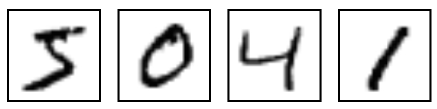
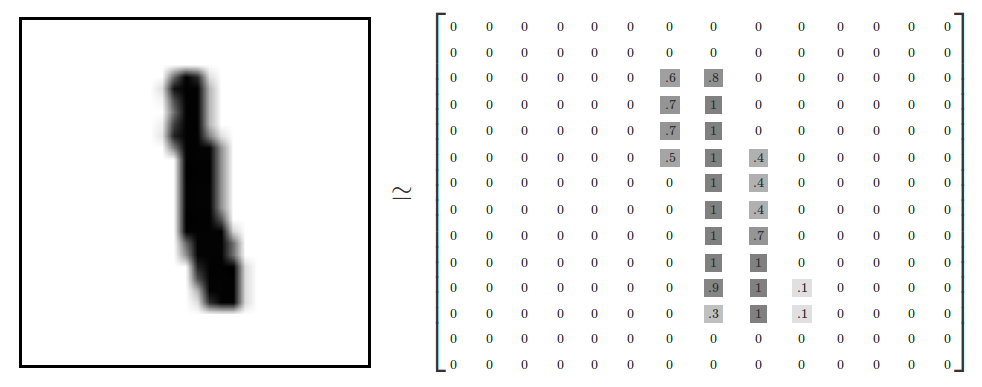

在上文（《TensorFlow快速上手》）中，我们介绍了TensorFlow中的一些基本概念，并实现了一个线性回归的例子。
本文我们趁热打铁，接着用TensorFlow实现一下神经网络吧。
TensorFlow中的神经网络可以用来实现回归算法和分类算法，本文将分别给出实现这两种算法的代码。除此之外，还将介绍一个TensorFlow中重要且常用的概念——placeholder（占位符），和一个著名的数据集：MINST数据集。
1 placeholder
在开始之前，先得说一下placeholder，中文翻译为占位符。
tensor不仅以常量或变量的形式存储，TensorFlow 还提供了feed机制，该机制可以临时替代计算图中的任意操作中的tensor，可以对图中任何操作提交补丁，直接插入一个tensor。具体方法即使用tf.placeholder()为这些操作创建占位符。简单使用如下：
1 | # 创建input1和input2这两个占位符 |
2 神经网络实现回归算法
2.1 代码及说明
1 | import tensorflow as tf |
2.2 结果

这个神经网络比较简单，使用了tanh()作为激活函数，梯度下降法为优化器，二次代价函数为损失函数。
拟合出的结果如上图红线所示，可以看出，大致是一个二次函数曲线。
3 神经网络实现分类算法
3.1 MNIST数据集简介
MNIST是一个入门级的计算机视觉数据集，它包含各种手写数字图片，它也包含每一张图片对应的标签，告诉我们这个是数字几。比如，下面这四张图片的标签分别是5，0，4，1。

MNIST数据集有两部分组成：60000行的训练数据集（mnist.train）和10000行的测试数据集（mnist.test）。
每一个MNIST数据单元有两部分组成：一张包含手写数字的图片和一个对应的标签。我们把这些图片设为“xs”，把这些标签设为“ys”。训练数据集和测试数据集都包含xs和ys，比如训练数据集的图片是 mnist.train.images ，训练数据集的标签是 mnist.train.labels。
每一张图片包含28像素X28像素。我们可以用一个数字数组来表示这张图片：

我们把这个数组展开成一个向量，长度是 28x28 = 784。因此，在MNIST训练数据集中，mnist.train.images 是一个形状为 [60000, 784] 的张量，第一个维度数字用来索引图片，第二个维度数字用来索引每张图片中的像素点。相对应的MNIST数据集的标签是介于0到9的数字，用来描述给定图片里表示的数字。为了用于这个教程，我们使标签数据是”one-hot vectors”。 一个one-hot向量除了某一位的数字是1以外其余各维度数字都是0。所以在此教程中，数字n将表示成一个只有在第n维度（从0开始）数字为1的10维向量。比如，标签0将表示成([1,0,0,0,0,0,0,0,0,0,0])。因此， mnist.train.labels 是一个 [60000, 10] 的数字矩阵。
3.2 代码及说明
1 | import tensorflow as tf |
3.3 结果
1 | Iter 0,Testing Accuracy 0.8349 |
本例中神经网络的输出层用了softmax()函数进行分类，依旧使用了二次代价函数作为损失函数，梯度下降法作为优化器。
结果显示，在训练了21轮后，模型的准确率达到了91.4%，这个准确度不算高，所以还需要进行优化，优化方式下文（TensorFlow进一步优化神经网络）将介绍。
4 小结
在本文中，分别实现了神经网络的回归算法和分类算法，其中提到的有关神经网络的一些概念，如激活函数、损失函数、优化器等，先请读者自行参考相关资料，本人后续可能会补充。
5 参考资料
[1]@Bilibili.深度学习框架Tensorflow学习与应用.2018-03
[2]TensorFlow中文社区.基本用法 | TensorFlow 官方文档中文版